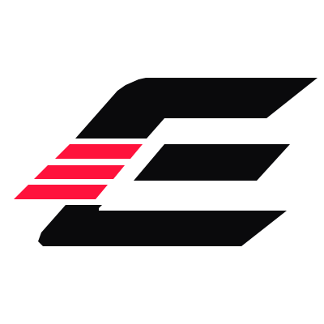
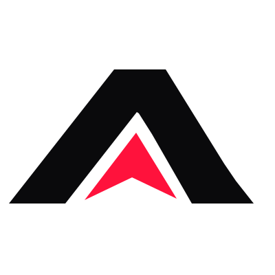
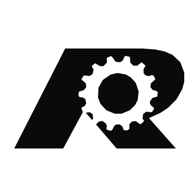

SAFETY GEAR
Developing programs to help reduce financial barriers to protective motorcycle equipment.
A rider-first foundation in development, built around access to essential safety gear, meaningful motorcycle education, and support when the unexpected happens.
Riding is more than a hobby. We're building a resource for riders who want to train, protect themselves and look out for others—before and after an accident.

Developing programs to help reduce financial barriers to protective motorcycle equipment.

Working toward assistance with courses, skills training, and endorsement-related education.

Designing responsible assistance for qualifying accident-related medical expenses.
We're developing partnerships, rider events, and transparent assistance policies. If you'd like to help build the mission, watch for future announcements on our official website.
VISIT FOUNDATION WEBSITE